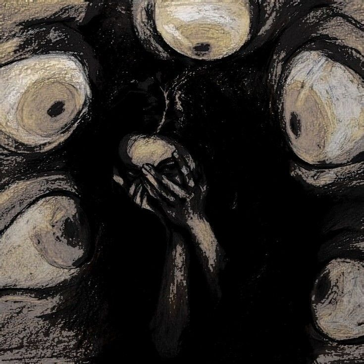
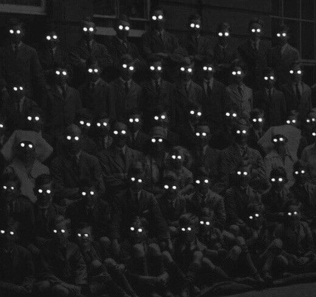
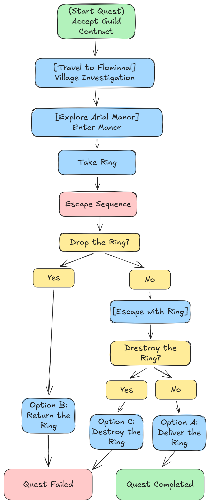
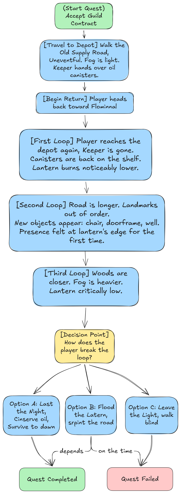
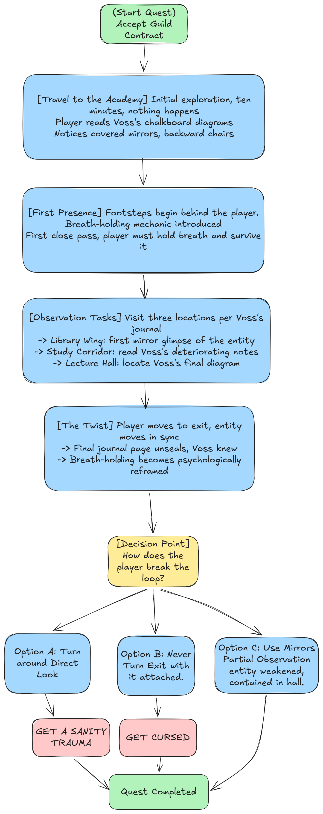
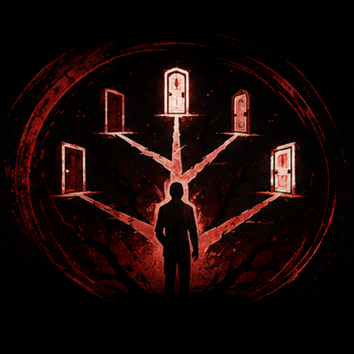
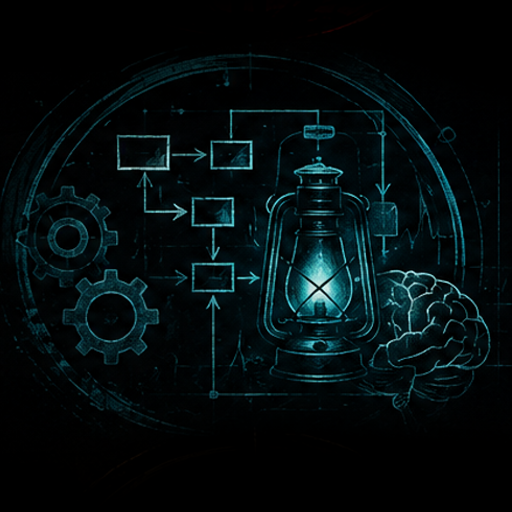

⟵ Back
Quest Fantasy
"Nothing here hunts you outright. It only waits for you to make a sound, take what isn't yours, or look."
Design Pillars
- Dread Through Restraint > entities rarely attack outright; presence, implication, and sound design carry the fear instead of jump scares.
- Consequences That Follow > every ending leaves a mechanical or psychological mark that carries forward into later quests.
- The Player as Complicit > horror emerges from what the player does, theft, greed, curiosity, not only from what hunts them.
Target Emotions

Dread
Quiet environmental wrongness builds long before anything shows itself.
Isolation
Manors, fog roads, and empty lecture halls strip away any sense of help.
Guilt
Theft, greed, and being used by an NPC turn the player into part of the problem.

Paranoia
Something is always just outside the light, the fog, or the corner of the eye.
Quests Overview
Quest 1: Final Will Delivery
Sauvelen Arial Manor > retrieve a sealed heirloom, wake the Arial Guardian.
Quest 2: The Long Road Back
The Old Supply Road > a simple errand becomes a fog-bound loop lit only by a dying lantern.
Quest 3: Watch Rotation
Voss Academic Hall > observe a presence that feeds on being noticed, without ever turning around.
Core Mechanics
- The Lantern (Quest 2) > a visibly shrinking flame is the player's only light and only countdown; burn bright to see more, dim to survive longer.
- Holding Breath (Quest 3) > suppress all sound to avoid an entity that tracks noise, but breath can't be held forever, and holding it means moving slowly.
- Both mechanics turn tension into something the player physically manages, not just something they watch happen to a character.
Questgivers
Rovel Arial Bello
Claims distant blood to a dead noble house
Flominnal Watchtower Guard
Pays far too much for a simple oil run
Scholar Aldren Voss
Sleepless, precise, hiding what he already knows
Systemic Hooks
- Entity behavior built in escalating phases, from passive presence to active pursuit.
- Sanity and screen-edge distortion accumulate visibly and can carry permanent effects into future quests.
- Environmental manipulation (looping roads, shifting manors) replaces scripted chases.
- Every ending is a trade-off: a struggle mechanic, a resource choice, or a permanent psychological cost, never a clean win.
Quest Flowcharts (preview)
Quest 1 Flowchart

Quest 2 Flowchart

Quest 3 Flowchart

Why These Quests Work in a Horror Context
- Entities that test and wait instead of chasing on sight.
- Tension built through a resource the player can watch run out.
- A mechanic (breath, light) that makes the player complicit in their own survival.
- Twists that recontextualize everything the player already did.
- Consequences that quietly follow the player into later quests.
Quest Design Document (PDF Preview)
Outcomes Overview

- Legacy Corrupted > the ring is delivered; a greedy claimant inherits a bloodline he doesn't understand.
- Guardian Calmed > the ring is returned; the manor and its guardian go quiet.
- Bloodline Severed > the ring is destroyed; the guardian is freed from purpose and turns fully hostile.
- Entity Destroyed, Player Marked > direct confrontation in Quest 3 ends the threat at a permanent psychological cost.
- Entity Carried or Contained > avoidance or partial observation lets the player walk away, but not always alone.
Implementation Notes

- Entity state machines handle phase transitions (passive, testing, active pursuit) independently per quest.
- Lantern oil and breath-hold meters drive pacing without relying on scripted enemy encounters.
- Sanity and screen distortion tracked as a persistent value that can carry between quests.
- Branching outcomes use Boolean flags so later quests can react to earlier player decisions.
- Blueprint scripting recommended for real-time environmental manipulation (shifting corridors, looping roads).
Design Takeaways
- Restraint reads scarier than reveal; entities are stronger as an implication than as a model on screen.
- A visible countdown resource (light, breath) builds tension without needing a chase.
- Consequences that follow the player between quests make single-quest choices feel weighty.
- Twists land harder when the mechanic the player has been using turns out to mean something else.
- Clear per-quest documentation keeps three very different horror hooks consistent as a set.
Follow the Development
These 3 quests are being built as new additions to Beneath the Quest Line, bringing the game to 5 complete quests.
and keep an eye out on the development!
View Devlogs